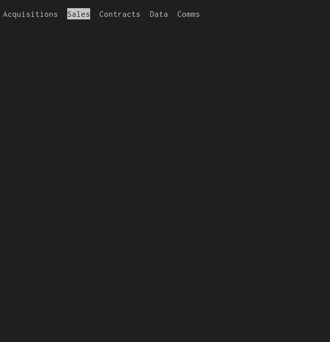

He continuado con el desarrollo de ilka. Ahora mismo, la prioridad es tan solo añadir sqlite al esquema.
La idea no difiere mucho de unas cuantas tablas de excel glorificadas.
Sin embargo, las cosas se convertirán en un problema una vez comience a añadir archivos de texto y a manejar sockets.
El plan es mantener una versión de los archivos activos siempre presente en alguna máquina.
Mañana volveré a clases, por lo que, al menos esperaría contar con más tiempo libre para desarrollo.
Esta publicación solo la hago en caso de que no alcance a subir los archivos de ilka para antes de medianoche.
La imágen de arriba es una demostración del menú principal de ilka. Solo son cinco opciones que completar.
La primera de ellas planeo completarla entre hoy y mañana.